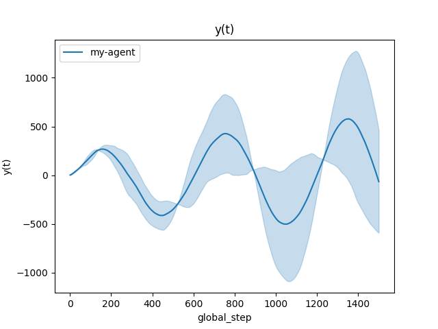

Note
Go to the end to download the full example code
Checkpointing¶
This is a minimal example of how to create checkpoints while training your agents, and how to restore from a previous checkpoint.
[INFO] 13:52: ... trained!
[INFO] 13:52: Saved ExperimentManager(my-agent) using pickle.
[INFO] 13:52: The ExperimentManager was saved in : 'rlberry_data/temp/manager_data/my-agent_2025-03-07_13-52-18_4fc75549/manager_obj.pickle'
[INFO] 13:52: Saved ExperimentManager(my-agent) using pickle.
[INFO] 13:52: The ExperimentManager was saved in : 'rlberry_data/temp/manager_data/my-agent_2025-03-07_13-52-18_4fc75549/manager_obj.pickle'
Saved manager at rlberry_data/temp/manager_data/my-agent_2025-03-07_13-52-18_4fc75549/manager_obj.pickle.
[INFO] 13:52: Running ExperimentManager fit() for my-agent with n_fit = 2 and max_workers = None.
checkpoint at rlberry_data/temp/manager_data/my-agent_2025-03-07_13-52-18_4fc75549/output_1/checkpoint.pickle (timestep = 500)
checkpoint at rlberry_data/temp/manager_data/my-agent_2025-03-07_13-52-18_4fc75549/output_0/checkpoint.pickle (timestep = 500)
checkpoint at rlberry_data/temp/manager_data/my-agent_2025-03-07_13-52-18_4fc75549/output_0/checkpoint.pickle (timestep = 1000)
checkpoint at rlberry_data/temp/manager_data/my-agent_2025-03-07_13-52-18_4fc75549/output_1/checkpoint.pickle (timestep = 1000)
[INFO] 13:52: ... trained!
[INFO] 13:52: Saved ExperimentManager(my-agent) using pickle.
[INFO] 13:52: The ExperimentManager was saved in : 'rlberry_data/temp/manager_data/my-agent_2025-03-07_13-52-18_4fc75549/manager_obj.pickle'
Loading manager from rlberry_data/temp/manager_data/my-agent_2025-03-07_13-52-18_4fc75549/manager_obj.pickle.
[INFO] 13:52: Running ExperimentManager fit() for my-agent with n_fit = 2 and max_workers = None.
--> MyAgent loaded from checkpoint: rlberry_data/temp/manager_data/my-agent_2025-03-07_13-52-18_4fc75549/output_0/checkpoint.pickle
--> MyAgent loaded from checkpoint: rlberry_data/temp/manager_data/my-agent_2025-03-07_13-52-18_4fc75549/output_1/checkpoint.pickle
checkpoint at rlberry_data/temp/manager_data/my-agent_2025-03-07_13-52-18_4fc75549/output_0/checkpoint.pickle (timestep = 1500)
checkpoint at rlberry_data/temp/manager_data/my-agent_2025-03-07_13-52-18_4fc75549/output_1/checkpoint.pickle (timestep = 1500)
[INFO] 13:52: ... trained!
[INFO] 13:52: Saved ExperimentManager(my-agent) using pickle.
[INFO] 13:52: The ExperimentManager was saved in : 'rlberry_data/temp/manager_data/my-agent_2025-03-07_13-52-18_4fc75549/manager_obj.pickle'
from rlberry.agents import Agent
from rlberry.manager import ExperimentManager
from rlberry.manager import plot_writer_data
class MyAgent(Agent):
name = "my-agent"
def __init__(self, **kwargs):
Agent.__init__(self, **kwargs)
self.data = [0.0, 1.0]
self.checkpoint_file = None
self.total_timesteps = 0
def fit(self, budget: int, **kwargs):
"""This agent is solving a simple difference equation,
just to illustrate checkpoints :D"""
del kwargs
# check if there is a checkpoint to be loaded
if self.checkpoint_file is not None:
loaded_checkpoint = MyAgent.load(self.checkpoint_file, **self.get_params())
self.__dict__.update(loaded_checkpoint.__dict__)
print(f" \n --> MyAgent loaded from checkpoint: {self.checkpoint_file} \n")
# run training loop
for _ in range(budget):
self.total_timesteps += 1
yt = (2 * self.data[-1] - self.data[-2]) / (1 + 0.01**2)
yt += 0.1 * self.rng.normal()
self.data.append(yt)
if self.writer:
self.writer.add_scalar("y(t)", yt, self.total_timesteps)
# Checkpoint every 500 timesteps
if self.total_timesteps % 500 == 0:
self.checkpoint_file = self.save(self.output_dir / "checkpoint.pickle")
print(
f"checkpoint at {self.checkpoint_file} (timestep = {self.total_timesteps})"
)
def eval(self, **kwargs):
del kwargs
return self.data[-1]
if __name__ == "__main__":
manager = ExperimentManager(
MyAgent,
fit_budget=-1,
n_fit=2,
seed=123,
)
# Save manager **before** fit for several timesteps! So that we can see why checkpoints are useful:
# even if ExperimentManager is interrupted, it can be loaded and continue training
# from last checkpoint.
# But first, we need an initial call to ExperimentManager.fit() (for zero or a small number of timesteps),
# so that ExperimentManager can instantiate MyAgent and it can start checkpointing itself.
# This is because the __init__ method of MyAgent is only executed
# after the first call to ExperimentManager.fit().
manager.fit(0)
manager_file = manager.save()
print(f"\n Saved manager at {manager_file}.\n")
# Fit for a 1000 timesteps
manager.fit(1000)
# Delete manager. This simulates a situation where we couldn't call
# manager.save() after calling manager.fit(), e.g. when your process is interrupted
# before .fit() returns.
del manager
# Load manager and continue training from last checkpoint
print(f"\n Loading manager from {manager_file}.\n")
loaded_manager = ExperimentManager.load(manager_file)
# Fit for 500 more timesteps
loaded_manager.fit(500)
# The plot shows a total of 1500 timesteps!
plot_writer_data(loaded_manager, tag="y(t)", show=True)
Total running time of the script: (0 minutes 1.570 seconds)